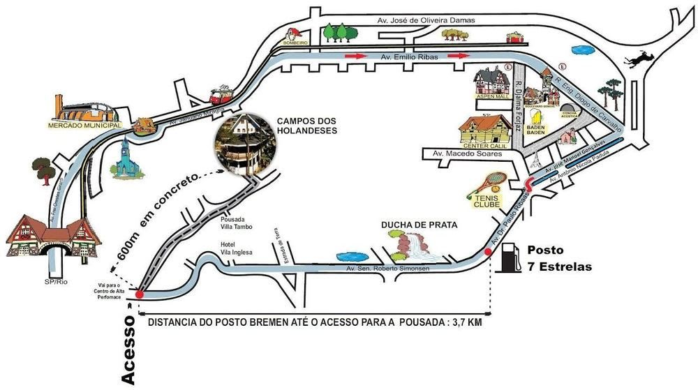

Uma agradável e moderna infraestrutura te esperam na Pousada Campos do Holandeses em Campos do Jordão. Cercada pelo verde, em uma área de 6 mil metros quadrados, no Charmoso Bairro Vila Inglesa, a nova pousada oferece a oportunidade de desfrutar momentos de descontração e bem-estar na montanha. Com excelentes opções de tarifas e parcelamentos, a Campos dos Holandeses dispõe de apartamentos diferenciados para agradar todos os gostos.
Aproveite para passar algum tempo na sauna e mergulhar na piscina aquecida e coberta da pousada. Mantenha a forma na sala fitness e divirta-se na sala de jogos brincando nas mesas de sinuca e carteado. As crianças também podem se divertir com tranquilidade na área de lazer, que oferece brinquedoteca e sala de games e internet.
Experimente também nosso café da manhã tipo brunch com bolos e quitutes, que são elaborados artesanalmente pela nossa confeiteira e servido das 8h ao meio-dia.
Aproveite toda a natureza da montanha nesta região arborizada e cercada de pássaros e esquilos, bastando para relaxar alguns minutos de tranquilidade e distração na beira do lago vendo as carpas nadarem e hospede-se em uma das Melhores Pousadas de Campos do Jordão.
Como chegar: Rua Orivaldo Albino Rodrigues (antiga rua 5), nº 595 - o acesso fica pela Estrada Municipal do Salto - Vila Inglesa - Campos do Jordão - SP - CEP: 12.460-000
